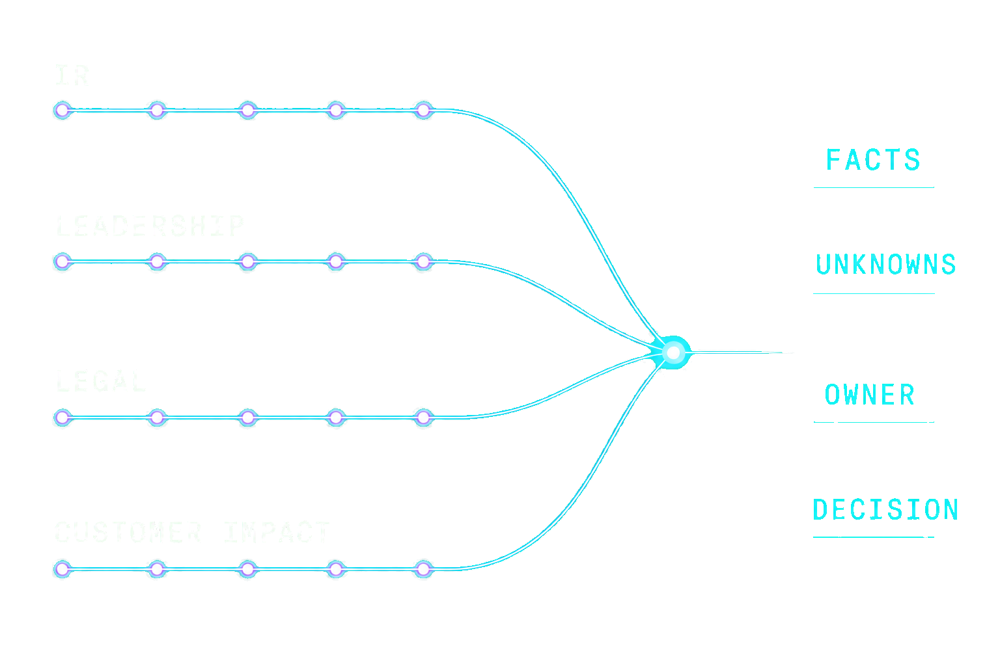
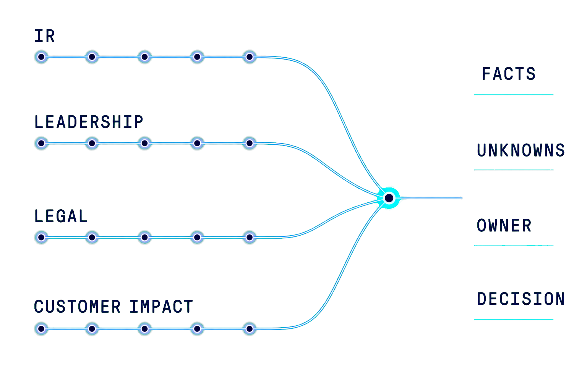

Evidence
What do we know, and what is still missing or disputed?
Identity-first incident response
InaiSec is the identity-first IR layer for everything after an alert is confirmed: collect evidence, trace the compromised credential, map blast radius, and prepare who must be notified.
Built by a founding security engineer from Databricks. Previously Capital One. Co-inventor of 4 security patents.
The problem
Detection can confirm that an alert is real. It rarely answers what the business needs to decide next. Analysts still pull evidence from identity, cloud, SaaS, tickets, and notes; leadership, counsel, and customer teams enter the conversation with only part of the story.
By the time those views meet, the next call often has to be made before the picture is complete.
What do we know, and what is still missing or disputed?
What could this mean for systems, customers, and the business?
Who owns the next call, and what evidence is enough to make it?
Can we explain why we made that call later?
What we’re building around
InaiSec is being shaped with security leaders around the point where a technical investigation becomes a business decision. The goal is not another alerting surface. It is a shared incident story that helps the people in the room move with more confidence.
Make what is known, missing, stale, or disputed visible.
Give security, leadership, counsel, and customer teams one incident story to work from.
Make the next decision, its owner, and its evidence basis explicit.
Leave a record that explains why the call was made when it was.


Why now
A single credential incident can now cross identity, cloud, SaaS, data, customer operations, and counsel in hours. AI and automation can accelerate the gathering of facts, but they do not carry the accountability for a customer, legal, or business decision.
The people accountable for the next move still need shared evidence, clear ownership, and a record they can explain.
One incident rarely stays in one system or one team.
Faster findings do not automatically create a clearer decision.
Customers, leadership, and counsel need to understand the reasoning, not just the result.
About the founder
Across more than a decade of security engineering at Capital One and Databricks, including building the multi-cloud SIEM and IR infrastructure that ran through Databricks’ hypergrowth, one pattern stayed constant: IR teams doing world-class work on top of fragmented evidence and manual correlation.
InaiSec is built for that gap. It provides the speed and precision of automated identity tracing combined with the flexibility required for complex, modern environments.
Join the design partner program
InaiSec is looking for 3 to 5 paid design partners running real investigations against the systems they already use. Send a short note with your role, company, current IR tools, and the incidents you want InaiSec to help scope.
FAQ
A first conversation should make the next step clearer, not ask you to take a leap of faith.
No. Detection matters, but this conversation starts once a signal is confirmed and people need to align on facts, impact, ownership, and the next decision.
No. InaiSec is not a replacement for detection, containment, counsel, or human approval.
Not for a first conversation or tabletop. A spoken, non-identifying incident story or realistic scenario is enough; we do not ask for a data upload or production access.
No. The focus is a clearer decision record and better cross-functional coordination. Legal conclusions remain with your counsel.
Security and incident-response leaders at customer-data companies who have lived an incident where scope, impact, ownership, or customer communication was hard to defend.
If there is a fit after the first conversation, we may invite you to a deeper working session around a realistic tabletop. The purpose is to shape the workflow and decide together whether a paid design partnership makes sense.